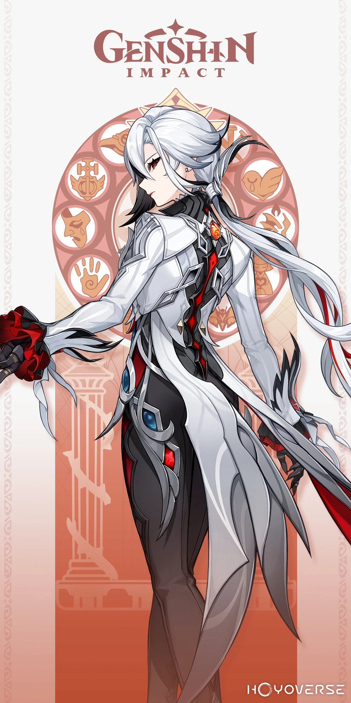
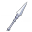
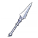

About Arlecchino
About Arlecchino
 

Arlecchino, also known as "The Knave," is a mysterious character in Genshin Impact.
She is the head of the House of the Hearth and the Fourth Fatui Harbinger.
Arlecchino Build
| Rarity | ★★★★★ |
|---|---|
| Role | Main DPS |
| Element | Pyro |
| Signature Weapon | Crimson Moon's Semblance |
| Best Artifacts | Fragment of Harmonic Whimsy (4-piece) |
| Main Stats | Sands: ATK% Goblet: Pyro DMG Circlet: CRIT Rate/CRIT DMG |
| Sub Stats | CRIT Rate, CRIT DMG, ATK%, Elemental Mastery |
Materials Needed for Ascension and Talent Level-Up
| Ascension Materials | Talent Level-Up |
|
|
|---|